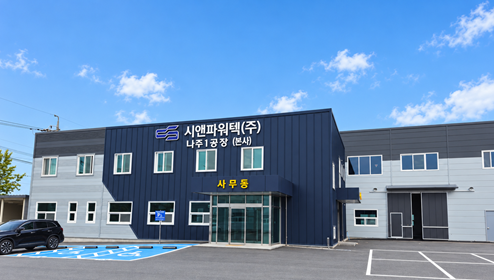

HOME / COMPANY
Company회사소개
C&P INC.배전 전력기기를
배전 전력기기를
직접 설계하고
생산합니다
시앤파워텍은 2013년 설립된 전력기기 제조기업입니다. 배전선로에 사용하는 고장구간 자동개폐기, 친환경 부하개폐기, 변압기와 보호기기를 생산합니다.
나주공장에서 조립, 배선, 세팅, 절연유 주입과 검사를 진행하며 제품 품질을 관리합니다.
제품소개2013
시앤에스㈜ 설립, 자가공장 매입, 개폐기 및 차단기 몰드콘 어셈블리 특허 출원, OIL ASS 공급 개시
2015
기업부설연구소 설립, 공장 신축 완료, 옥내용 AISS 공급 개시
2016
계기용 변성기(M.O.F) 공급 개시
2024
나주공장 신축, 시앤파워텍㈜으로 상호 및 대표이사 변경
2025
나주공장 증축
2026
벤처기업확인(혁신성장형)
Organization
조직 구성
대표이사를 중심으로 연구, 품질, 생산, 영업과 구매관리 조직을 운영합니다.
연구소
품질부
생산부
영업부
구매관리부